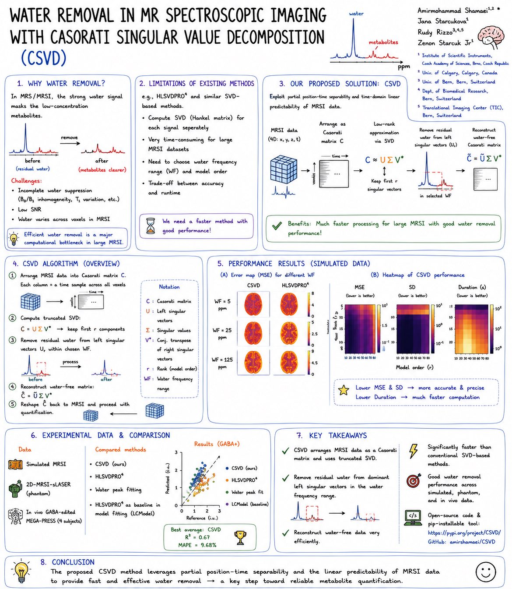

Signal processing · Publication
CSVD water removal
A low-rank Casorati singular value decomposition method that exploits the shared structure of MRSI data to remove residual water efficiently across large spectroscopic datasets.

Signal processing · Publication
A low-rank Casorati singular value decomposition method that exploits the shared structure of MRSI data to remove residual water efficiently across large spectroscopic datasets.
